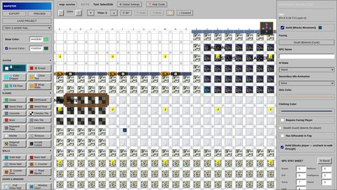
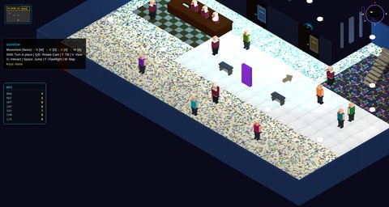
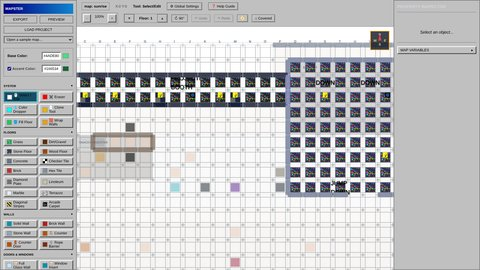
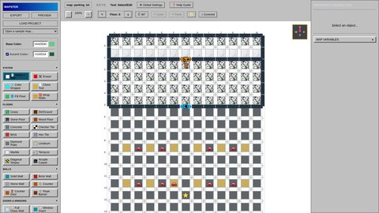
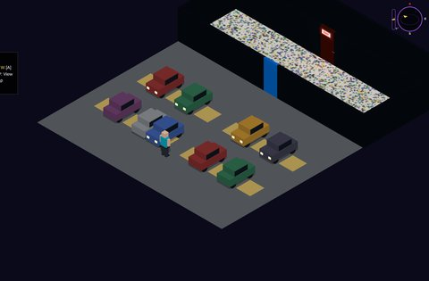
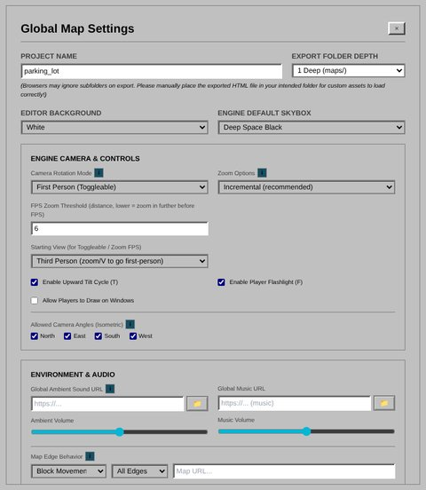

Tool · Try it in your browser
Mapster
Paint a level on a grid, then walk around it in 3D.
Mapster is the level editor I built to make the rooms in Midnight at the Multiplex, and it now stands on its own. You lay a map out tile by tile: floors, walls, doors and windows on the edges between tiles, then furniture, cars, signs, stairs, NPCs and everything else on top. One click on Preview turns that grid into a 3D scene you can walk through, with lighting, weather, fog and a working minimap.
Maps can have several floors joined by stairs and ladders, doors that need a key, guards that patrol and spot the player, light switches, smashable windows players can draw on, and branching conversations from Saymaker, the dialogue editor that grew into Scenemaker, attached to any character. Export saves the map as a playable web page, and that same file opens again in Mapster for more editing.
Try it
This is the whole editor, with the movie theater from Midnight at the Multiplex already open: two floors, a lobby, a concession stand and the projection booth upstairs. Change anything you like, then press Preview to walk around it.
How to use it: pick a tool on the left (a floor, a wall, an object) and click or drag on the grid; walls and doors go on the edges between tiles. Choose Select / Edit and click anything to change it in the panel on the right. The arrows next to Floor switch floors, and Open a sample map loads the theater or a parking lot. In Preview, move with WASD, turn the camera with Q/E, jump with Space, interact with G, and press M for the minimap. Help Guide explains every tool. Best on a computer with a mouse; for more room, use the full-screen button in the editor's top-right corner.
Everything runs in your browser and nothing is uploaded. Export downloads your map as a web page you can open again later with Load Project; it plays on its own once it sits next to Mapster's engine files, so in this demo, use Preview to play it. Open the editor in its own tab.
What it does
- Paint the map. Fourteen floor styles; solid, brick, stone and glass walls, archways, counters, rope barriers, swinging and sliding doors, and windows; with fill and wrap-the-walls tools for big areas, plus undo and redo.
- Furnish it. Player start, cars, keys, arcade cabinets, benches, signs, directory kiosks, stairs, ladders, warp points, and posters, light switches, mirrors and neon mounted on the walls.
- Bring it to life. NPCs with their own stats, clothing, idle animations and conversations; guards with vision cones that patrol and spot the player; locked doors that need the right key.
- Set the mood. Skyboxes, lighting, fog, rain and snow per floor, background music and ambient sound, named zones, and a fog-of-war minimap that fills in as the player explores.
- Choose the camera. Isometric with 45° or 90° turns, free rotation, locked, or first person.
- Built to teach itself. A searchable help guide and a ? next to every setting that needs explaining.
How I built it
- Plain HTML and JavaScript, no build step: open the file and it runs.
- The 3D side is the same three.js engine that plays the rooms in Midnight at the Multiplex, so a map that looks right in Preview looks the same in the game.
- Every map is one JSON object (floors of tiles, each tile with a floor, an object, a ceiling and four walls), which keeps maps easy to generate from code as well as by hand.
- A viewer mode lets another page show a map with no player, just a camera to look around with. Beyond The Stacks uses it for its 3D library, and builds its whole building from a Mapster map.
In motion
Screenshots
Click a picture to see it full size.











